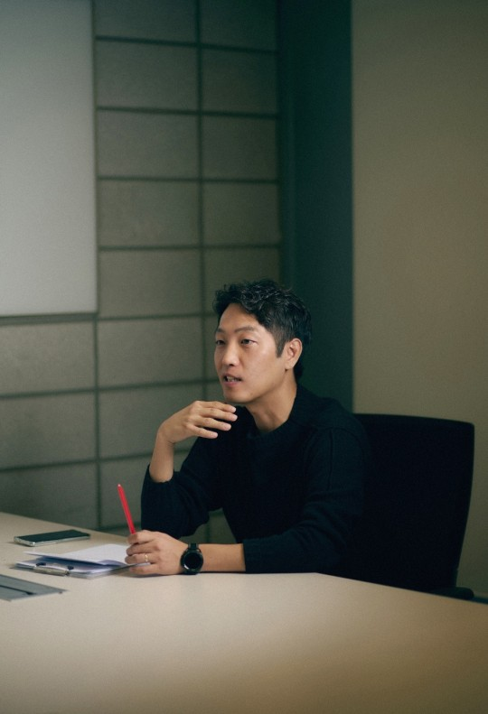

TV/연예

"손흥민에 이강인·조규성이 영웅 서사 펼친다"…'조선체육회' PD의 [일문일답]
(엑스포츠뉴스 오승현 기자) '조선체육회' 축구 스타 손흥민이 주인공인 1회 방송을 통해 ‘국가대표가 주인공이 되는 판’을 제대로 펼칠 예정이다.
4일 첫 방송되는 TV조선 ‘조선체육회’는 실제 국가대표들이 주인공이 되는 리얼 스포츠 예능을 콘셉트로, 대세 MC 전현무의 첫 스포츠 중계는 물론 현역 시절 ‘사고뭉치’ 였던 전설들 허재X김병현X이천수, ‘캐스터계 다크호스’ 조정식 이 멤버로 확정됐다.
이들의 전무후무한 케미스트리 속에 '조선체육회'는 종편 최초로 중계하는 2023 항저우 아시안게임까지 정조준한다. 전작 ‘골 때리는 그녀들’로 스포츠 예능에 일가견을 보인 이승훈 PD는 “진짜 국가대표들을 만나고 싶은 갈증이 있었다”고 밝혔다.
“진짜 주인공은 실제 국가대표들”이라고 강조하는 ‘조선체육회’ 이승훈 PD의 일문일답을 공개한다.
이하 이승훈 PD 일문일답.
Q. ‘조선체육회’가 하는 일이 무엇인가요?
A. 2023 항저우 아시안게임, 2024 파리 올림픽, 각종 A매치 경기 등의 국가대항전 해설, 취재, 홍보, 응원 등이 주 업무이다. 이런 업무를 통해 국가대표 선수들이 진짜 주인공이 되는 판을 만들 것이다. 1회 주인공은 전국민이 사랑하는 축구 스타 손흥민이다. 손흥민뿐 아니라 이강인, 조규성 등 또다른 국가대표들이 ‘서브 남주(?)’로 등장해 함께 영웅 서사를 펼칠 예정이다.
Q. ‘조선체육회’와 기존 스포츠 예능의 차별점을 꼽는다면?
A. 연예인들이 스포츠에 도전하는 예능은 지금까지 많았다. ‘골때녀’를 만들며 실제 국가대표들을 만나고 싶은 갈증이 있었다. 실제 국가 대항전의 주인공인 ‘국대’들의 절실함과 진짜 스포츠맨십을 예능에 가져오는 시도는 ‘조선체육회’가 처음이다. 국가대표 선수들과 함께 만드는 최초의 스포츠 예능으로서, 시청자들에게는 눈호강을 선사하고 국가대표들에게는 기분좋은 헌사를 건넬 것이다.
Q. 스포츠예능국장 전현무가 이끄는 ‘조선체육회’ 멤버들에게는 어떤 기대를 하고 있나?
A. ‘조선체육회’를 통해 TV CHOSUN 첫 예능 출연을 결정지은 전현무와 조정식, 현역 시절에 ‘욱’하는 성질로 사고 좀 쳐봤던 레전드 스포츠 스타들 허재X김병현X이천수가 모였다. 이들은 쉽게 볼 수 없는 레전드들의 만남과 함께, 발 넓은 인맥을 활용해 여러 종목의 선수를 섭외하고 다양한 스토리와 케미스트리를 이끌어 내 줄 것으로 기대한다.
Q. TV CHOSUN은 이번에 종편 최초로 아시안게임을 중계. 아시안게임까지 함께 갈 ‘조선체육회’가 가장 만나보고 싶은 국가대표 선수를 꼽는다면?
A. 아시안게임 남자축구 결승전에서 승리한 이강인을 가장 만나고 싶다. 이강인과 인연이 있는 황선홍 감독까지 함께 ‘조선체육회’가 인터뷰하는 장면을 꿈꾼다. 이를 위해 이강인에게 전하는 응원가도 만들고 있으니 시청자들의 많은 기대 부탁드린다.
실제 국가대표들이 주인공이 되는 리얼 스포츠 예능 ‘조선체육회’는 4일 오후 10시 첫 방송한다.